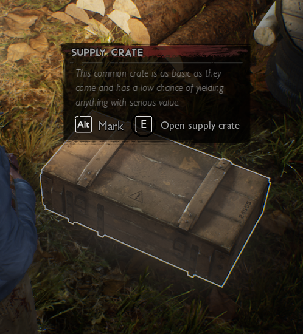
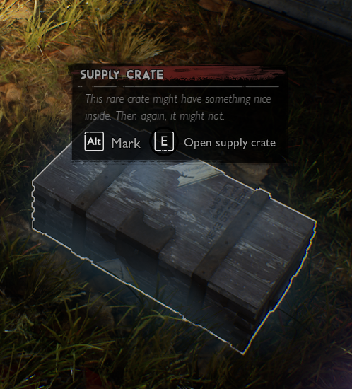
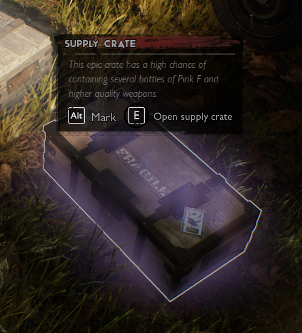
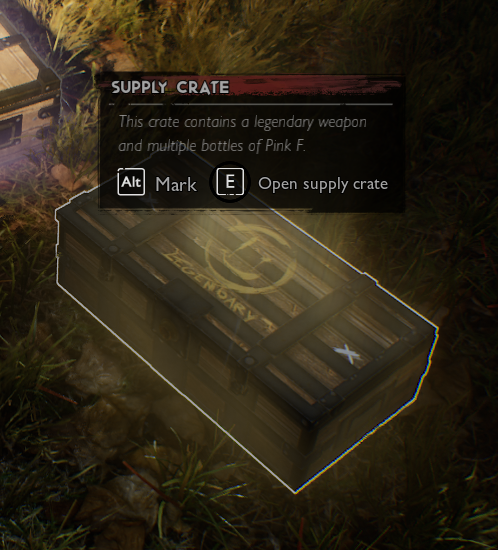
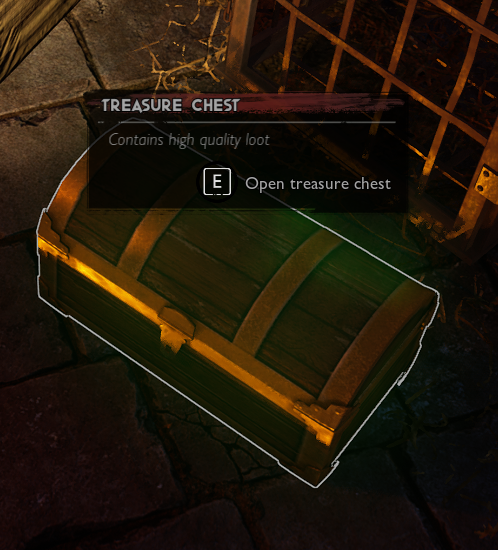

This common crate is as basic as they came and has a low chance of yielding anything with serious value.

This rare crate might have something nice inside. Then again, it might not.

This epic crate has a high chance of containing several bottles of Pink F and higher quality weapons.

This crate contains a legendary weapon and multiple bottles of Pink F.

Contains high quality loot.